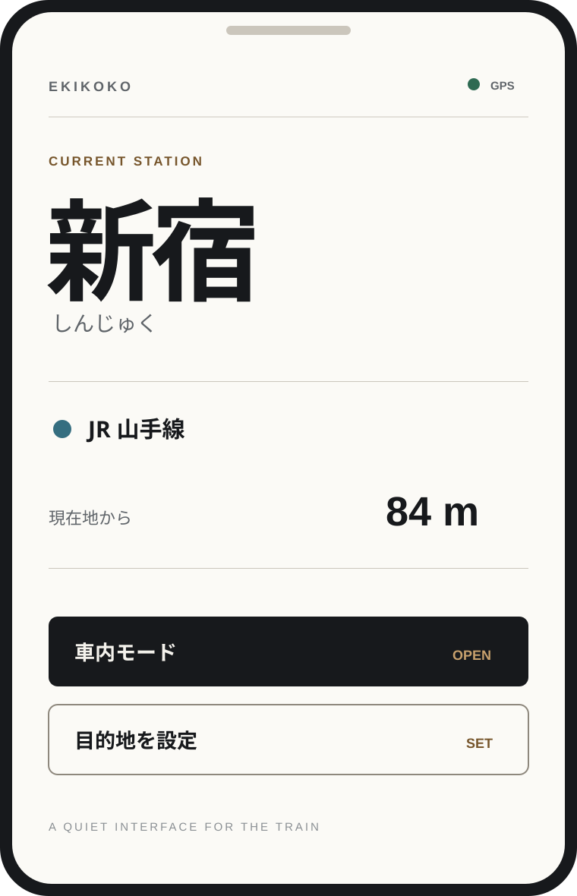
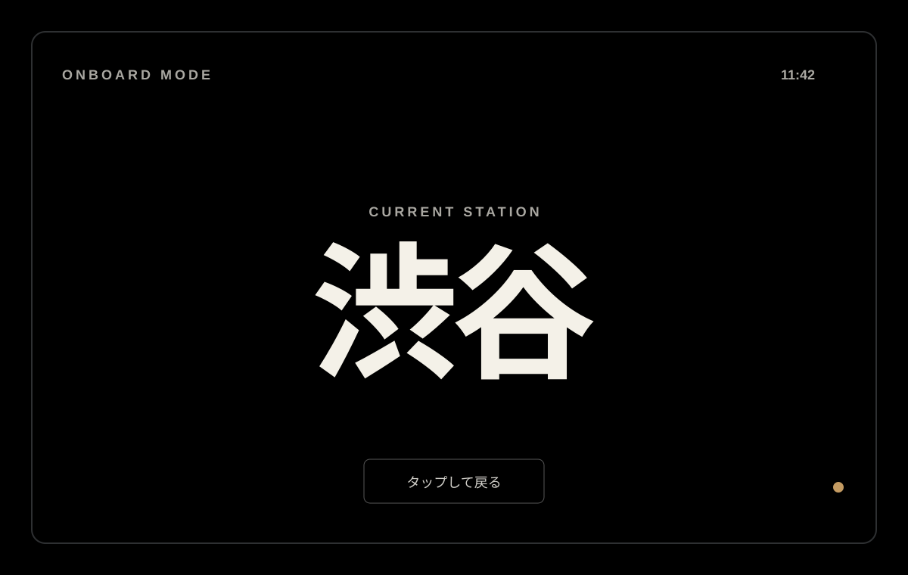

Why EKIKOKO
必要なのは、
乗換検索ではなく
「いまここ」。
車内では、掲示板が人で隠れる。アナウンスを聞き逃す。わざわざ経路検索するほどでもない。エキココは、その短い不便だけを解きます。
01 / SEE
掲示板が見えない座席や混雑位置によって、案内表示が視界から消える。
02 / HEAR
放送を聞き逃すイヤホンや会話中でも、手元を見れば現在地を確認できる。
03 / CHECK
駅名だけ、すぐ知りたい経路検索を挟まず、現在駅を大きく表示する。
02 / PRODUCT
開いた瞬間、
現在駅が主役。
情報を詰め込むのではなく、移動中に必要なものを順番に。現在駅、次駅、目的地、車内モードをひとつの流れにまとめます。

NOW
現在駅を大きく
GPSから近い駅を判定し、駅名・路線・距離を読み取りやすく表示。
RIDE
車内モード
駅名だけを特大表示。膝上や手元で一瞬見る使い方を想定しています。
DEST.
降りる駅を設定
目的地を選び、降車前に気づけるようにサポートします。
GUIDE
駅で迷う場面にも
きっぷ、IC、QR、乗り換えなどの補助情報へすぐアクセス。

Onboard mode
画面を見た
その一秒で分かる。
暗い車内でも眩しすぎず、混雑時でも読み取りやすい。駅名を主役にした確認専用画面です。
03 / HOW TO USE
使い方は、
3つだけ。
STEP 01
開く
ブラウザまたはホーム画面からエキココを起動。
STEP 02
位置情報を許可
現在地から近い駅を判定するために位置情報を利用します。
STEP 03
見る
現在駅が大きく表示されます。必要なときだけ目的地を設定。